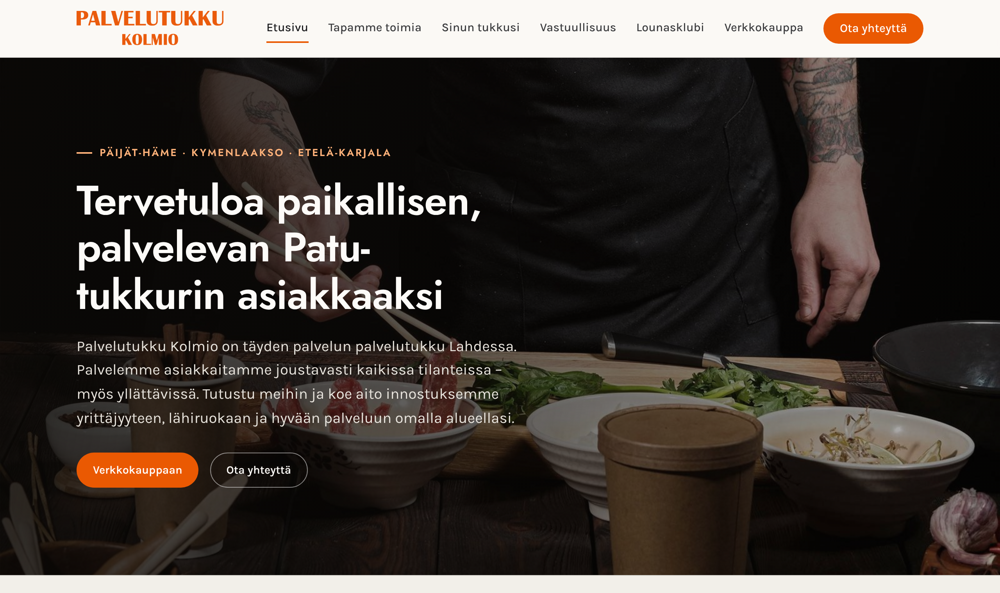
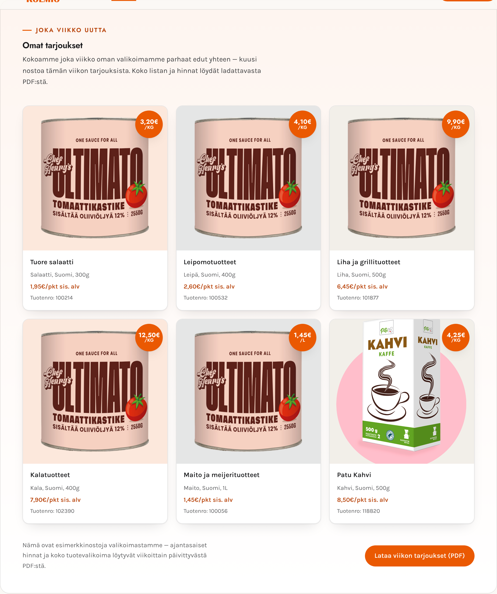
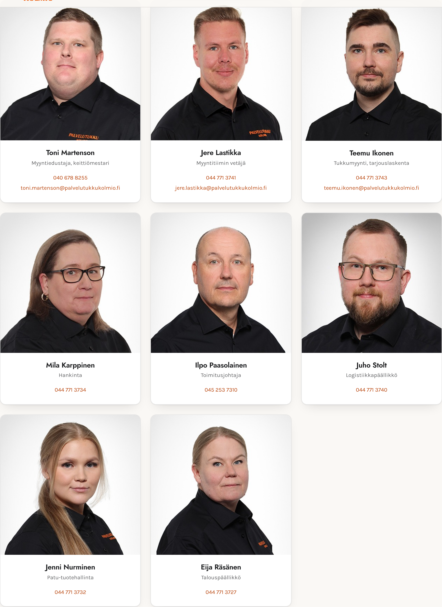
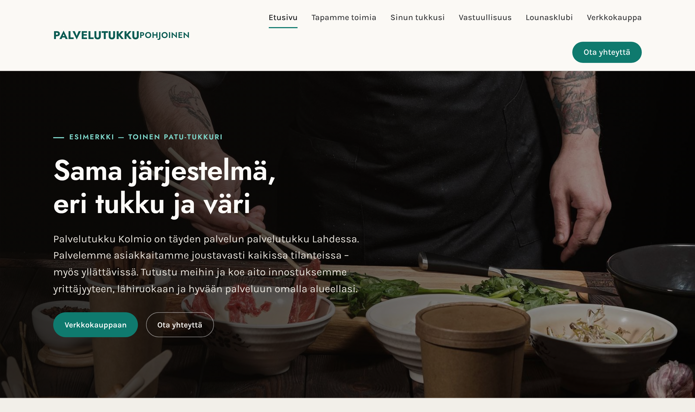

Palvelutukku Kolmion verkkosivulle rakennettu moderni ilme ja rakenne ei ole sidottu yhteen tukkuun — samaa järjestelmää voi käyttää pohjana jokaisen Patu-tukkurin omalla sivustolla, kukin omalla ilmeellään.
Jokainen Patu-tukkuri hoitaa oman verkkosivunsa, viikkotarjouksensa ja markkinointinsa erikseen. Se tarkoittaa toistuvaa työtä ja vaihtelevaa laatua tukkureiden välillä.
Osa tukkureiden sivuista on ajan tasalla, osa ei — asiakkaalle ketjun yhtenäisyys ei näy.
Jokainen tukkuri suunnittelee ja tuottaa oman viikkotarjousmateriaalinsa erikseen, vaikka rakenne on sama.
Yhdeksän erillistä sivustoa tarkoittaa yhdeksää erillistä päivitys- ja korjaustarvetta jatkossakin.
Palvelutukku Kolmiolle tehty uudistus sisältää valmiin moduulijärjestelmän: etusivun, tarjouspaneelin ja henkilöstökorttien kaltaiset osat, jotka on rakennettu uudelleenkäytettäviksi.



Pohjaväri, fontit ja logo vaihtuvat tukkukohtaisesti — rakenne, komponentit ja käytettävyys pysyvät samoina. Alla havainnekuva samasta etusivupohjasta kahdella eri tunnuksella.

Teen parhaillaan Kolmion viikoittaiset tarjousmainokset, joten tunnistan tämän työn toistuvan osan käytännössä.
Sama tuote- ja hintapohja toimisi jokaisen tukun omalla sivulla ja mainosmateriaalissa, vain sisältö vaihtuu viikoittain.
Yhteinen pohja tarkoittaa, ettei jokaisen tukun tarvitse suunnitella omaa tarjousmateriaaliaan erikseen joka viikko.
Asiakas tunnistaa saman Patu-tarjouskokemuksen, siirtyipä hän minkä tahansa ketjun tukun sivulle.
Tätä samaa järjestelmää voisi pilotoida yhdellä tai kahdella muulla Patu-tukkurilla, ja arvioida sen jälkeen, kannattaako se ottaa käyttöön koko ketjussa — patunetti.fi mukaan lukien.